Projet B3 — Cyna
Projet fil rouge du Bachelor CPI RES : concevoir et démontrer le système d'information d'un éditeur de cybersécurité qui regroupe ses 215 collaborateurs sur un nouveau siège à Genève, avec une filiale à Paris et un SOC exploité en continu. Le rendu comprend un document de cadrage, un document d'architecture technique, la documentation d'exploitation et une maquette de validation.
Ce projet a été mené à quatre, chaque membre portant un pôle : sécurité, DevOps, administration des postes, et infrastructure. J'ai tenu le rôle infrastructure : virtualisation, réseau des deux sites, segmentation, cloud hybride, annuaire, sauvegarde et plan de reprise. Tout ce qui est présenté ci-dessous relève de ce périmètre.
C'est aussi un rôle en amont de la chaîne : les trois autres pôles avaient besoin de mes machines et de mon réseau pour produire leurs propres preuves — le SIEM, le code de provisionnement, la VDI. C'est la contrainte qui a le plus structuré ma façon de travailler sur ce projet.
Cible dimensionnée, maquette réduite
Deux niveaux à ne pas confondre. L'architecture cible proposée au client repose sur trois hôtes physiques en cluster avec une marge permettant de perdre un hôte sans interruption, un stockage partagé et un SOC redondé. La maquette qui la valide tourne sur un unique portable équipé d'un Ryzen AI 9 365 et de dix processeurs logiques, sous Hyper-V. Elle ne prouve pas la haute disponibilité — elle n'a qu'un hôte — mais elle valide les mécanismes : segmentation, routage inter-zones, tunnels chiffrés, annuaire multi-sites et sauvegarde.
Le schéma ci-dessous est la référence de tout le dossier : les trois emplacements (siège de Genève, filiale de Paris, extension Azure), les liens chiffrés et le plan d'adressage tel que déployé.
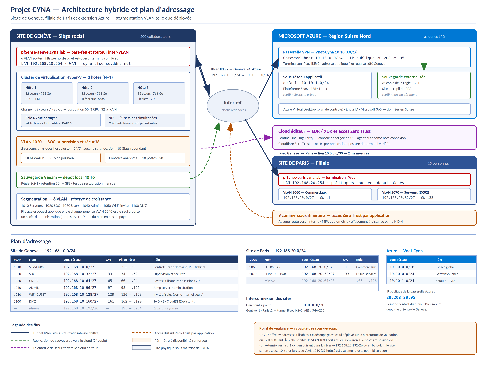
Sept machines virtuelles sous Hyper-V
La maquette simule deux sites interconnectés et une extension cloud. Le principe appliqué est qu'une machine porte un rôle et un seul, avec une exception assumée sur le serveur applicatif qui regroupe la console de sauvegarde et l'administration centralisée, faute de mémoire disponible.
| Machine | Rôle | Adresse | Système |
|---|---|---|---|
| pfsense-geneve | Pare-feu et routeur du siège, 9 interfaces | 192.168.10.254 | pfSense 2.7.2 / FreeBSD 14 |
| pfsense-paris | Pare-feu et routeur de la filiale | 192.168.20.254 | pfSense 2.7.2 / FreeBSD 14 |
| CYNA-GVA-AD01 | Contrôleur de domaine cyna.lab, DNS, DHCP | 192.168.10.10 | Windows Server |
| CYNA-PAR-AD01 | Contrôleur de domaine du site de Paris | 192.168.20.11 | Windows Server |
| CYNA-GVA-APP01 | Serveur applicatif, console Veeam, Windows Admin Center | 192.168.10.20 | Windows Server |
| Wazuh | SIEM, nœud maître du cluster (pôle sécurité) | 192.168.10.30 | Ubuntu / Wazuh |
| VM-CYNA-CLOUD | Cible de test de l'extension cloud | 10.10.1.x | Azure Standard B2ats v2 |
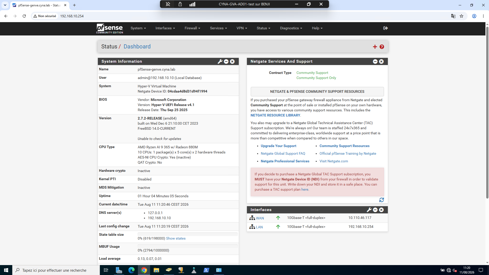
Segmentation en neuf zones
C'est la partie de la maquette la plus fidèlement transposable à la cible : les zones et leurs relations ne dépendent pas du nombre d'hôtes physiques. Le pare-feu de Genève porte neuf interfaces distinctes, chacune rattachée à son propre commutateur virtuel, avec un découpage en /27 sur la maquette et un plan en /24 sur la cible.
| Interface | Zone | Réseau maquette | Contenu |
|---|---|---|---|
| WAN | Internet | derrière box FAI | Sortie opérateur |
| LAN | Socle | 192.168.10.0/27 | Administration du pare-feu |
| SERVEURS | Back End | 192.168.10.0/27 | Annuaire, fichiers, trésorerie |
| SOC | Sécurité | 192.168.10.32/27 | Serveurs Wazuh, postes analystes |
| USERS | Utilisateurs | 192.168.10.64/27 | Postes, clients légers, VDI |
| ADMIN | Administration | 192.168.10.96/27 | Consoles, hôtes, équipements |
| WIFIGUEST | Invités | 192.168.10.128/27 | Wi-Fi visiteurs, isolé |
| CLOUD | Interconnexion | 192.168.10.160/27 | Terminaison du lien Azure |
| LINK_PARIS | Inter-sites | 10.0.0.0/30 | Point à point vers la filiale |
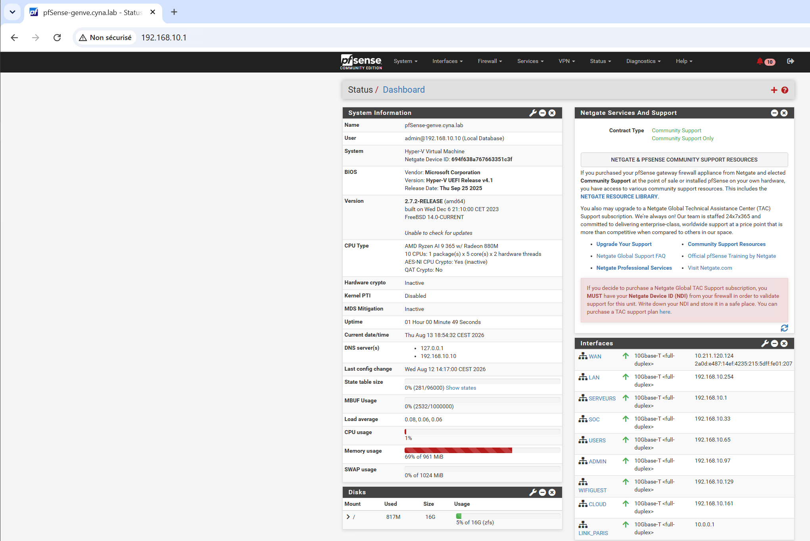
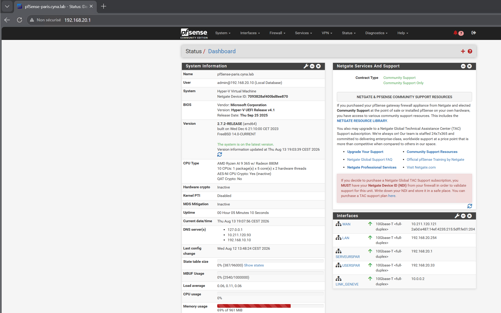
Tunnel IPsec Genève – Paris
Le lien entre les deux sites est un tunnel IKEv2 authentifié par clé partagée, chiffré en
AES 128, intégrité SHA-256, groupe Diffie-Hellman 14, avec une phase 2 en ESP entre
192.168.10.0/24 et 192.168.20.0/24. Il est opérationnel et validé de bout
en bout depuis le contrôleur de domaine de Paris vers celui de Genève, avec des temps de réponse de
l'ordre de deux millisecondes.
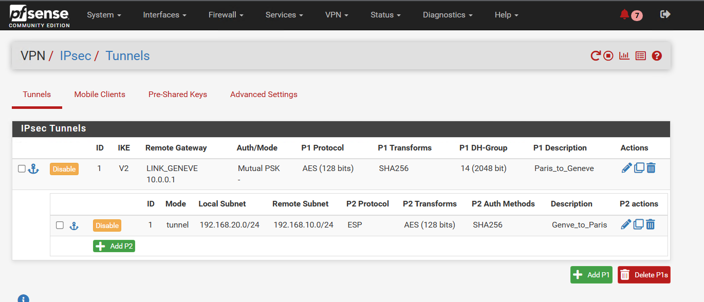
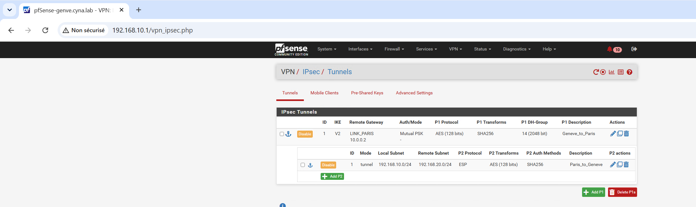
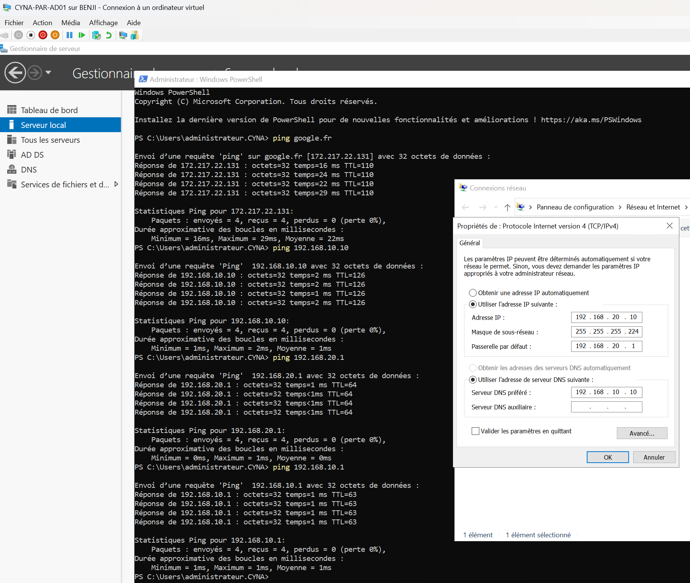
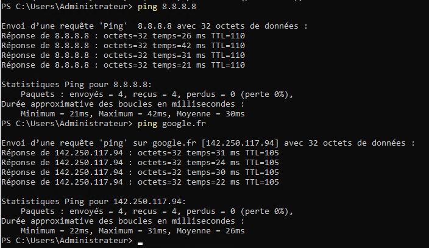
Extension Azure en région Suisse Nord
Le choix de la région n'est pas cosmétique : c'est lui qui maintient la résidence des données en
territoire suisse et qui rend tenable le raisonnement de conformité, le siège relevant de la LPD et
la filiale française du RGPD. Le réseau virtuel Vnet-Cyna porte un sous-réseau
applicatif en 10.10.1.0/24 et le GatewaySubnet imposé par Azure. Une
machine Linux de test y a été provisionnée, maintenue à l'état libéré entre deux séances parce que
l'abonnement étudiant utilisé consomme du crédit en permanence dès qu'une passerelle est active.
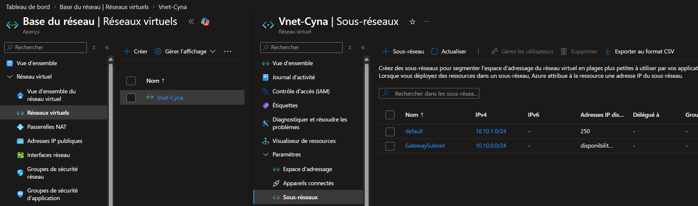
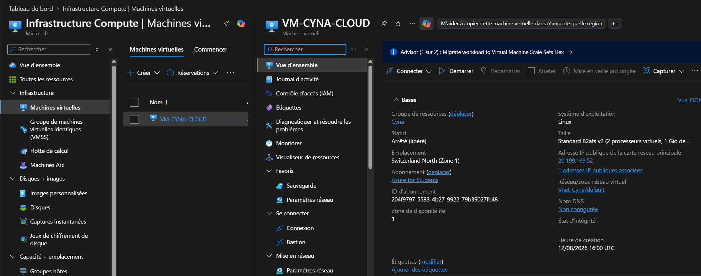
Le tunnel vers Azure n'a jamais monté
C'est le principal échec technique du projet, et je le documente entièrement parce que le diagnostic produit une exigence utile pour l'architecture cible. La configuration côté pare-feu est identique à celle du tunnel inter-sites qui, lui, fonctionne. Côté Azure, la connexion reste à l'état « Non connecté » ; côté pare-feu, la phase 1 ne se négocie jamais.
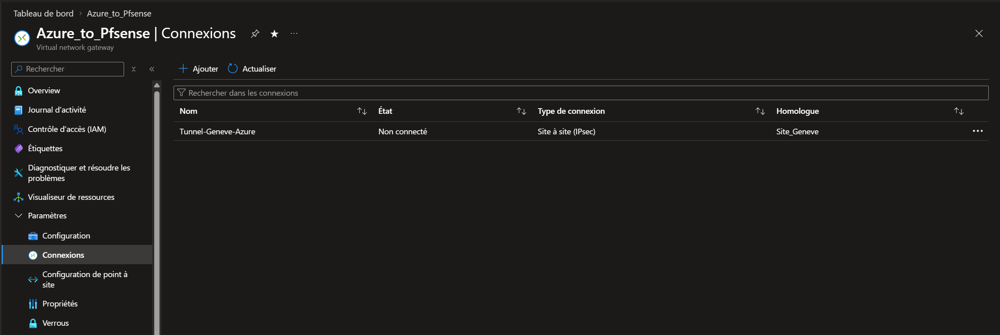
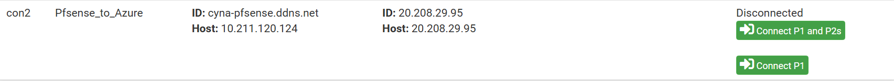
La cause est une double traduction d'adresses. La maquette est raccordée
à internet derrière une box opérateur : le pare-feu ne connaît que son adresse privée
10.110.46.117 sur son interface WAN, alors que l'adresse publique réellement vue par
Azure est tout autre. Le service de résolution de nom dynamique mis en place le démontre — il
restitue l'adresse publique du moment, différente de celle portée par l'interface. Ce mécanisme
absorbe la variabilité de l'adresse, il ne corrige pas la cause : la passerelle Azure attend un pair
joignable directement sur l'adresse déclarée.
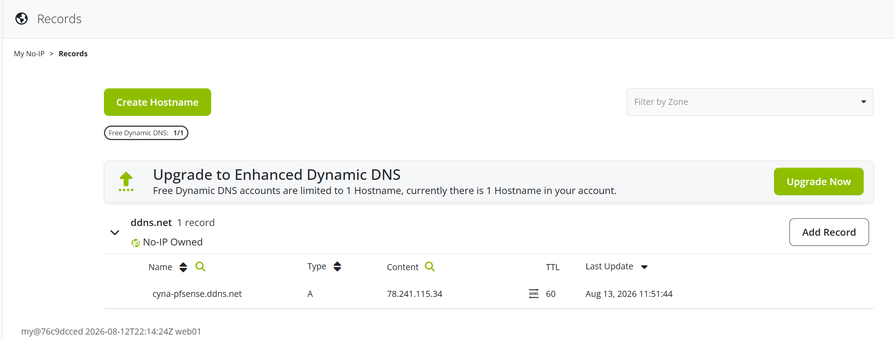
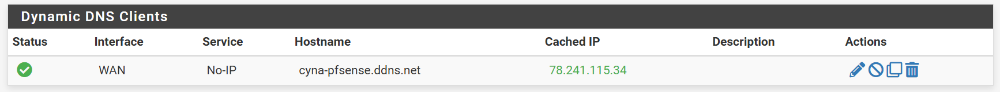
Le raccordement du site de production au cloud suppose une adresse publique fixe et une terminaison de tunnel sans traduction d'adresses. C'est une exigence à porter au contrat opérateur, au même titre que le débit et le délai de rétablissement. Le lien doit par ailleurs être doublé sur deux accès distincts, avec bascule automatique.
Ce que je retiens de ma propre gestion : j'ai traité en dernier la brique dont j'étais le moins sûr et dont deux autres pôles dépendaient. L'ordre correct est l'inverse — attaquer en premier ce qui cumule le plus d'incertitude et de dépendances en aval, parce que c'est le seul échec qui ne peut pas être absorbé tard.
Veeam sur les machines critiques
Les objectifs de reprise sont différenciés par criticité : 15 minutes de perte maximale et 1 heure de remise en service pour l'annuaire et le SOC, 4 heures pour la bureautique et les fichiers, avec application de la règle 3-2-1 et une troisième copie externalisée dans Azure. En maquette, la sauvegarde du contrôleur de domaine de Genève est opérationnelle, avec traitement compatible applications — sans cette option, sauvegarder un contrôleur de domaine revient à sauvegarder un état incohérent.
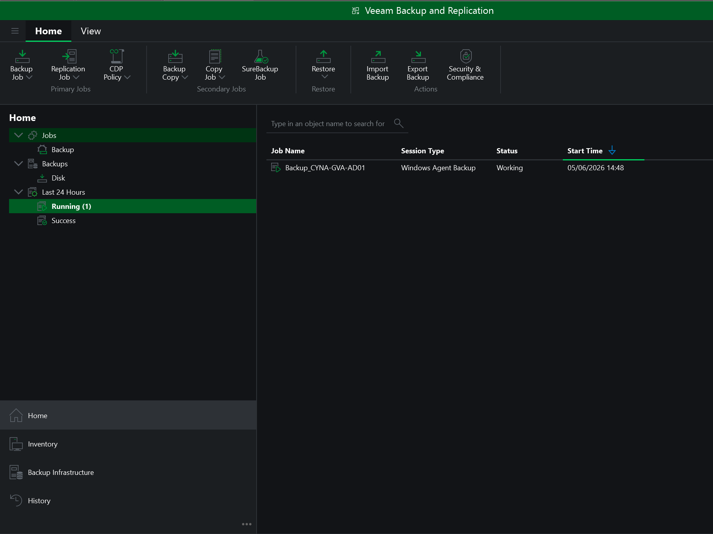
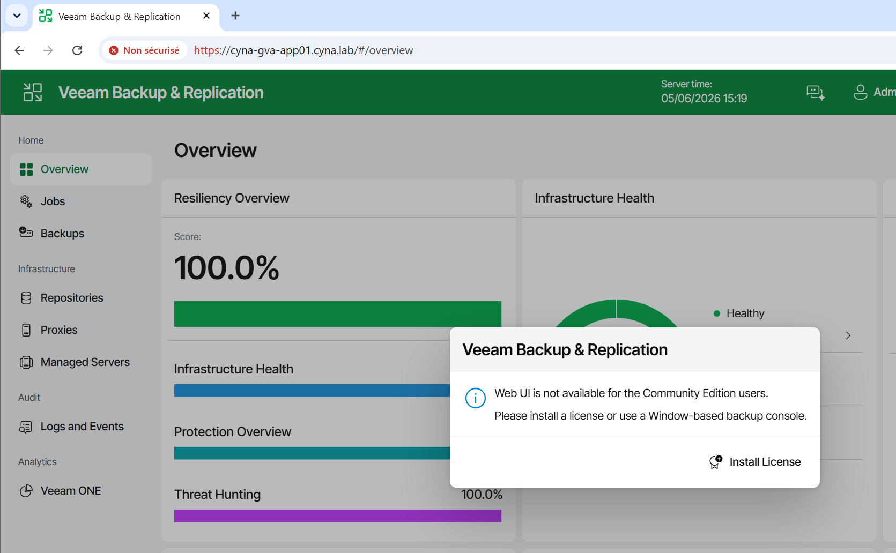
La dette que je documente
Le dossier rendu inscrit explicitement ce qui n'a pas été fait, plutôt que de le contourner par une formulation vague. C'est un choix de groupe et je le crois meilleur qu'un dossier qui prétend que tout fonctionne : un jury attentif regarde les règles, pas seulement le schéma.
- Le filtrage n'est pas appliqué. La segmentation existe et le routage inter-zones fonctionne, mais chaque interface porte encore une règle unique et permissive, posée pour débloquer les autres pôles pendant la construction. L'architecture a la forme d'un réseau segmenté et le comportement d'un réseau plat.
- Aucun test de restauration chronométré. J'annonce des objectifs de reprise sans jamais avoir mesuré une restauration réelle. C'est la faiblesse que je trouve la plus gênante, parce qu'elle ne dépend que de moi.
- Écart entre maquette et cible. Aucune bascule d'hôte ni règle d'anti-affinité ne peut être démontrée sur un hôte unique : la réponse à l'exigence de continuité repose sur un raisonnement, pas sur une preuve.
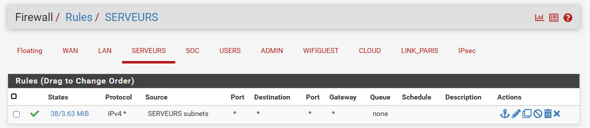
Mes vraies erreurs sur ce projet sont des erreurs de séquencement et de communication, pas des erreurs techniques. Le tunnel inter-sites est correct, la segmentation est correcte, le dimensionnement est défendable — ils sont simplement arrivés bien après la fenêtre que nous leur avions réservée, et trois personnes attendaient dessus.
J'en retiens deux règles concrètes : livrer à date fixe même incomplet, avec un état écrit de ce qui marche et de ce qui ne marche pas ; et décrire l'infrastructure sous forme de code dès le départ, parce que ce qui n'existe que sur une machine n'existe pas.